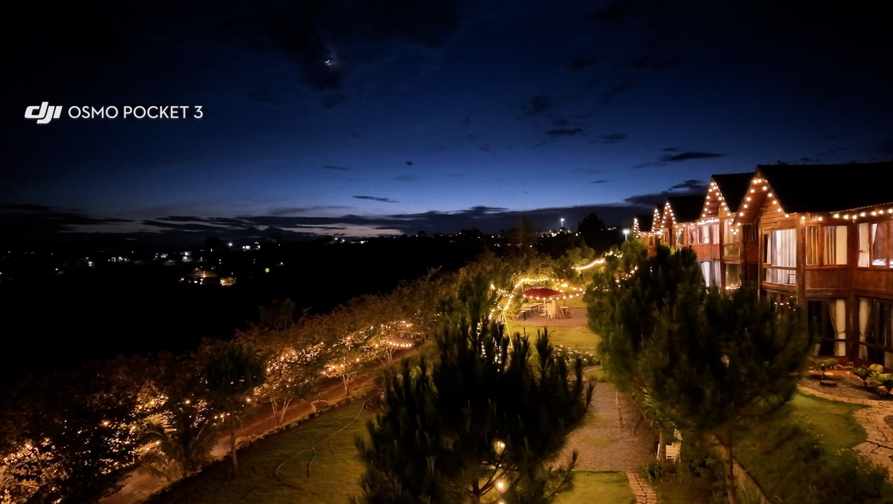

01 / CHẠM MÂY BẢO LỘCBẢO LỘC · VIỆT NAM
CHẠM VÀO BÌNH YÊN
BẢO LỘC · LÂM ĐỒNG
KHÁM PHÁ MỘT NƠI ĐỂ Ở LẠI
Chạm vào mây, chạm vào yên bình.
BAO LOC02 KHÁM PHÁ
Từ những buổi chiều đèn lên đến những chuyến đi quanh Bảo Lộc, hãy chọn một câu chuyện để bắt đầu.
03 CAO NGUYÊN BẢO LỘC
Những ngày chậm lại
giữa cao nguyên.
Khám phá cảnh sắc, hương trà và những câu chuyện ở Bảo Lộc. Một hành trình không cần vội.
Khám phá Bảo Lộc ↗04 KẾT NỐI VỚI CHẠM MÂY